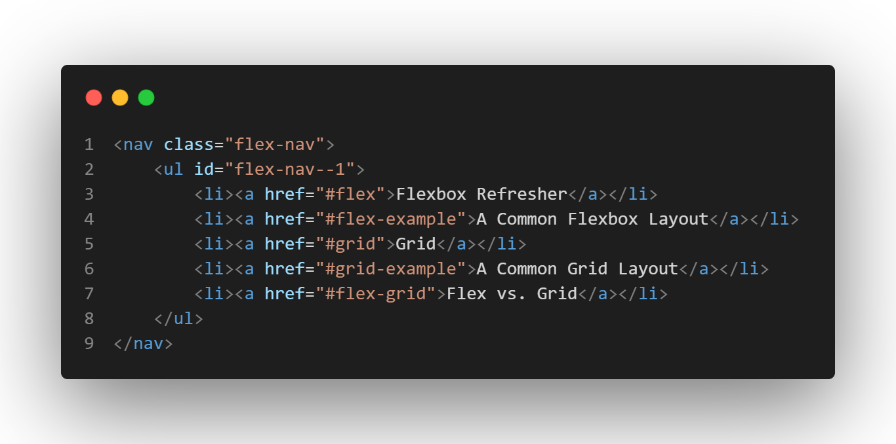
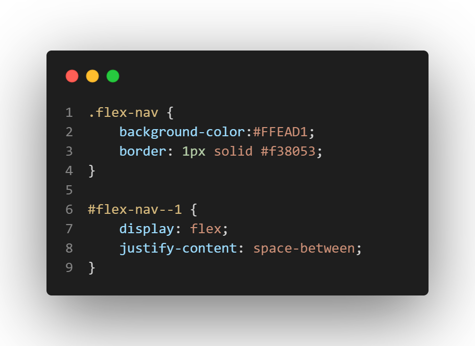
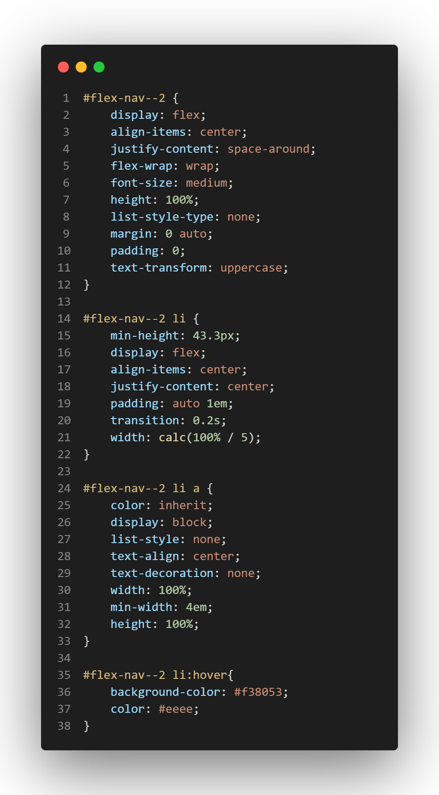
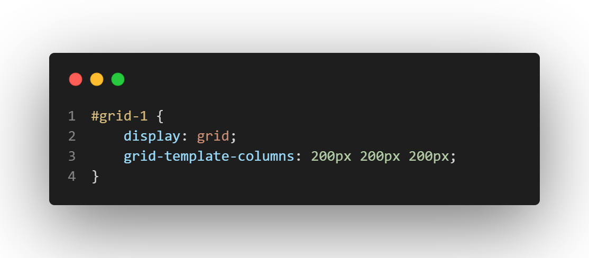
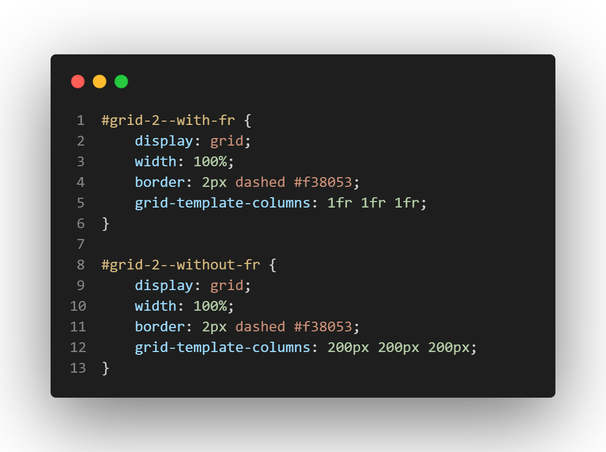
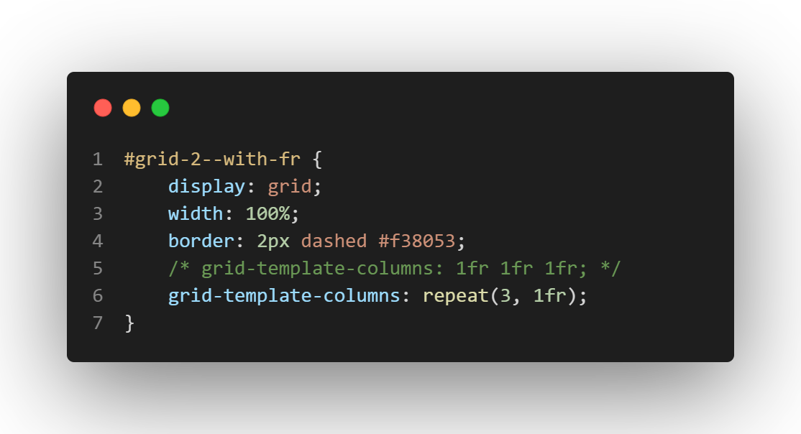
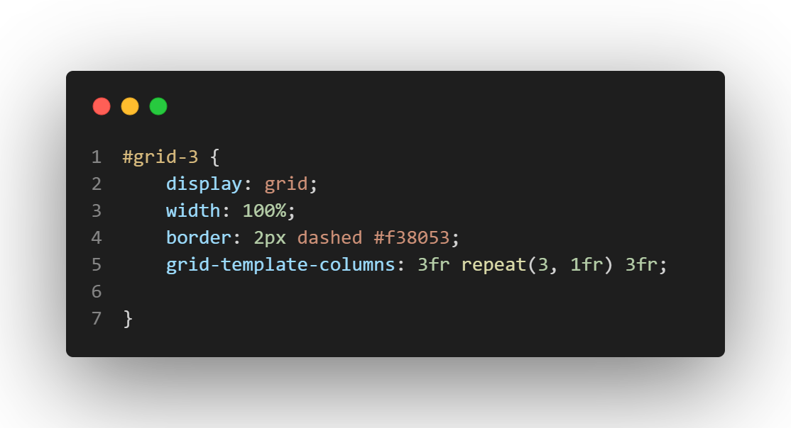

There are two systems we can use for layouts that are built into CSS and are the backbone of CSS
frameworks like Bootstrap and Tailwind. The first one we became introduced to was Flexbox: the "flexible
box" module that was added to the
W3C standard in 2017. Flexbox aims at allowing an easier way to distribute space
around items in a container, and allows these items to have a flexible size that can grow and shrink as
the container size changes. Flexbox is great if you want more control over the parts of a container or
div.
Item 1
Item 2
Item 3
In the div above, our item boxes live inside a flex-container. This container allows us to play around
with the space between its contents. I gave the container a border for better visualization, and I gave
it a padding of 1 times the size of the root element's font. I didn't want my flex items inside of the
container to touch, so I justified the content around the x-axis so that there's even space
around them, even against the edges of the container.
The paired CSS classes that give us the appropriate stylings based on our flex containers.
You can also see that there is more than one flex container. The boxes themselves are flex containers! Yo
dawg, I heard you like flex containers, so I put flex containers inside your flex containers.
A Common Flexbox Layout
A common use case for flexboxes/flexible containers tends to be navigation. A navbar displays buttons,
links, and content in a horizontal line along the top of your viewport, so if you want to align and
position those elements along that horizontal line in even/unique ways, flexbox helps with that
perfectly.

The current code for our page's navigation
Let's take our plain navbar from the top of the page and adjust it so that it's using our flex
properties.

The paired CSS class that targets our nav element and makes the ul element
a flex container.
In the CSS above, you can see how placing our list items inside a flex container (our ul
element) allowed us to space things around. Now let's add additional styling to make it look less like a
list and more like a navbar.

The paired CSS classes that targets our nav element and makes the ul
element a flex container. Additional styles added.
This block of code may seem excessive, but it's essentially just changing the colors and widths of the
items inside the flex container. And we have flex containers inside flex containers again, so that our
text from our anchor tag is in the middle of its container, too.
Intro to Grid
The grid layout is the superior alternative to table layouts, in which items on a viewport are positioned
as boxes in rows or columns, aka grids. Click here to read more on W3's specifications.
Grid layouts work better for larger areas where you want to define more intricate sections or web parts.
For example, you have more flexibility with side menus by using a grid layout:
Figure 1: Flex Layout
Figure2: Grid Layout
Figure 1 displays a standard flex flow while figure 2 allows boxes to take up certain lengths of rows and
columns.
Just like how we can define a flex container, we can define a grid container that can hold columns and
rows. We can either explicitly state how many columns and rows we want in our grid, or we can make
things more flexible and automated.
Item 1
Item 2
Item 3
Item 4
Item 5
grid-template-columns can tell us how many columns we want, and the same goes for
grid-template-rows
Item 1
Item 2
Item 3
Item 4
Item 5

Current code to get 3 explicit columns. Also, this example is currently inside a grid that has a
bit of overlap!!
To make things fit a bit better, we can use a more flexible unit than just pixels. fr stands
for "fractional unit", and it allows us to work with fractions, or percentages of our containers
Item 1
Item 2
Item 3
Item 4
Item 5
Without fractions, things aren't very responsive and the columns do not evenly take up the
width of the container
Item 1
Item 2
Item 3
Item 4
Item 5
With fractions, I'm specifying that my grid items will be a percentage of my container, and
as my container changes, the items adjust.

The grid-template-columns property specifies that I want 3 rows that are each
taking up 1 fraction of the container. You can change one of the units to make wider columns!
If you have a large grid with many tracks (these spaces between any two lines on the grid), you can use
the repeat() notation

The repeat notation does the same as the code above. First argument is how many
columns you want, and 2nd argument is how many spaces they should take up.
You can still create columns with different widths by combining the repeat notation with explicit units
Item 1
Item 2
Item 3
Item 4
Item 5
Item 6
Item 7
Item 8
Item 9
Item 10

With this code, I have 10 items in my grid container. I want the first column to have a
width of a third of the container, then I want to repeat 3 columns with a width of one fraction of
the container, then I want my last column to once again be a third of the container.
A Common Grid Layout
Most websites have a variation of a layout with headers, navigation, sidebars, main content, advertising,
and footers. In order to have dedicated sections that can respond nicely to different screen
resolutions, grid works best for organizing this content.
The header
Main article area
In this layout, we display the areas in source order for any screen less than 500 px wide. We go
to a two column layout, and then to a three.
Advertising
You can create grid areas that allow you to define a space and paired with the
grid-template-areas property, lay out how you want your areas organized. Tie this with
media queries and you have an easily responsive layout!
Click here to learn more about grid template
areas and how you can create more advance grid layouts.
Flex vs. Grid
Discussion time!
How would you describe the differences between flexbox and grid? How can you use them to work together? Do you think you enjoy one over the other?